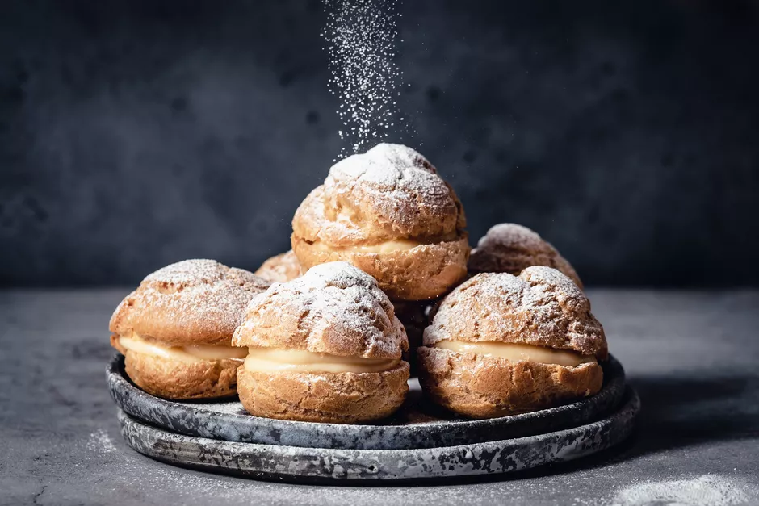

Japanese Cream Puffs

Shu cream is a Japanese dessert inspired by the famous French "choux cream". Although these decadent puffs are French in origin, they have become a Japanese culinary staple that kids of many generations have grown up eating.
When small individual choux pastry puffs are baked, the interior becomes light and airy, and the exterior turns crisp and golden. The puff is then filled with a sweet custard filliung. Before serving, the shu cream is gently dusted with confectioners' sugar.
This recipe makes eight puffs
Ingredients
For the Choux Pastry:
- 2 medium eggs
- 3 tablespoons butter
- 3 tablespoons flour, sifted
- 1 cup milk, warmed
- 1 tablespoon butter, melted
For the Custard Cream:
- 2 large egg yolks
- 1/2 cup sugar
- 2 tablespoons flour, sifted
- 1 cup milk, warmed
- 1 tablespoon butter, melted
For Dusting:
- 1/4 cup confectioners' sugar
Steps
Make the Pastry
- Heat the oven to 375 F. Prepare a baking sheet by layering a piece of parchment paper or a silicone sheet.
- Beat the eggs in a small bowl and set aside.
- Place the butter, sugar, and water in a pan and bring to a boil over medium heat.
- Add the flour to the pan and incorporate into the butter mixture by stirring very quickly. Turn off the heat and remove the pan from the stove.
- Add the beaten eggs slowly into the pan with the dough mixture, stirring well with a wooden spoon. Mix well to avoid lumps in the dough—it should be smooth and even, firm but pliable.
- Fill a piping bag—or sturdy zip-close bag with a snipped corner—with the dough.
- Gently squeeze out 8 small mounds of dough onto the baking sheet. With wet hands, even out the surface of each little ball.
- Bake the puff pastry for 30 minutes. Allow the puffs to cool on a cooling rack.
- Cut the puffs in half horizontally. Reserve.
Make the Custard
- In a medium-sized pan, mix the egg yolks and sugar, stirring well.
- Add the flour into the pan and mix well.
- Gradually add the warm milk into the egg mixture, stirring constantly.
- Place the pan on low heat and stir the mixture constantly until it has thickened, or about 5 to 7 minutes.
- Remove from heat and add the melted butter, mixing well.
- Let the cream cool off, covered in plastic wrap.
Assemble the Shu Cream
- Fill the bottom halves of puffs with a dollop of custard cream and cover with the top halves.
- Dust the finished cream puffs with confectioners' sugar.